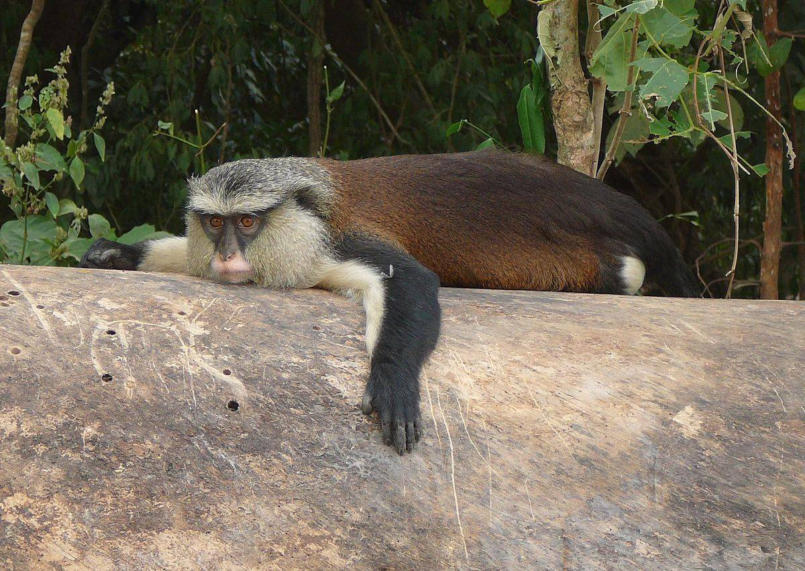

Erin-Ijesha Waterfall
Security/Safety Erin Ijesha Waterfall:
This is a very safe location.
What To Bring:
Before heading to Erin Ijesha Waterfall, here are some helpful things to take along with you:
Face cap or hat.
Mosquito repellant.
Things to do while at Erin Ijesha Waterfall
You get to try these at Erin Ijesha Waterfall:
Climb the hill at the waterfall
Take pictures.
Best Features
It is a place that is fun to be and very lively.
Most common visitors
Tourists, Photographers, Curators can be seen here.
Osun Groove
Osun-Osogbo Grove is notable as a grove in the honor of the fertility goddess Osun.The Osun-Osogbo grove is a sacred forest boasting of shrines, sculptures and art works in the honor of the goddess of fertility Osun.
Security/Safety of Osun-Osogbo Grove:
This is a very safe location.
What To Bring:
Before heading to Osun-Osogbo Grove, here are some helpful things to take along with you:
Face cap or hat.
Mosquito repellant.
Things to do while at Osun-Osogbo Grove
You get to try these at Osun-Osogbo Grove:
See the various sculptures.
Take pictures.
Best Features
It is a place that preserves relics of times past of our fore fathers.
Most common visitors
Tourists, Photographers, Curators can be seen here.
Ibodi Monkey Reserve
Ibodi Monkey forest is located at Atakumosa West Local Government Area of Osun State, Nigeria. Ibodi Monkey forest is also called Igbo Edun by the natives of Ibodi. The forest is believed to house Monkeys that reportedly came to Ibodi with an Oba of the town and Araomofe spirit from Ile Ife. The monkeys are known to come out at dawn to play around and cheer with visitors, villagers and all.
Ibodi Monkey forest can be visited by researchers, zoologists, nature enthusiasts, fun lovers
Services:
Ibodi Monkey forest grants access to the public for sightseeing and recreation.
Best Features
The monkeys swinging from tree to tree and playing around the forest makes one appreciate nature and life.
Who Can Visit?
Ibodi Monkey forest can be visited by researchers, zoologists, nature enthusiasts, fun lovers.
Best Time to Visit
The best time to visit Ibodi monkey forest is during the day when the monkeys come out play with visitors.
Safety
There is no threat to security here.
Battle of Jalumi site
The Jalumi War took place in the hilly country of the northeast of Osun State in the area that includes Ikirun, Iba, Inisa, Mesin Ipole (the present Imesi-ile), Okuku and Eko-Ende. It was one of the series of civil wars in Yorubaland between 1793 and 1893. In June 1878, word came to Ibadan that the Ilorins had joined the Ekitis and Ilas in the alliance against them. The Ekitis and Ila, now joined by the Ijeshas, laid siege to Ikirun. The Emir of Ilorin sent his forces, led by Ajia, to join his allies around Ikurin. They suffered a setback at Otan, but were reinforced and joined the siege. When news reached Ibadan they were unable to send help until their army returned on 14 October 1878 from an expedition to Meko. The Balogun Ogboriefon was told to march to the aid of Ikirun with five days.[4] It was the peak of the rainy season, and many Ibadan soldiers drowned crossing the Oba and Osun rivers. The Balogun had to share command with the Osi Ilori, a jealous and incompetent man. On 30 October 1878, the Ikiruns had been pressed back and fought within their town walls. The Balogun of Ibadan entered the town the next day with his relief force. The attacking forces at this time were in three groups. The Ilorins under Ajia were to the northeast, near the Ikirun farms. The Ilas under Prince Adeyale and the Ekitis under Fabunmi were camped together nearby. The Ijeshas were to the east, led by Ayimoro and Ogunmodede, encamped in the small town of Iba, visit to find out more...
Oranmiyan Staff

A popular tourist site. This 5.27 metre-high object is believed to be the staff used by Oranmiyan and to be the marking spot of his grave. Oranmiyan was the sixth King of Ife, the last son of Oduduwa, and the forerunner of the Yoruba race.
Security/Safety of Oranmiyan Staff
This is a very safe location.
What To Bring:
Before heading to Oranmiyan Staff, here are some helpful things to take along with you:
Camera to capture the sights and take selfies with
Cash to purchase local snacks from local vendors around.
Best Features:
This Staff is of historic and cultural importance as it is believed to be the felled sword-turned-staff of the warrior Oranmiyan, the youngest son of the great Oduduwa and the sixth Ooni of Ife.
LIAM
LAIM HOTEL is a 5-star luxury hotel located in Osogbo, It is situated in the ultra-serene town of Oshogbo and affords guests the opportunity of relaxing in an atmosphere of complete comfort, serenity, maximum security, luxury and royalty. LAIM HOTEL is more than just an immaculately crafted edifice with an unprecedented ambience.
Services:
Free parking
Wifi
Free breakfast.
Gym and Fitness
Room feature
Room service.
Suite.
ADELEKE UNIVERSITY
Adeleke University is a private owned institution, located in Ede, one of the popular town in Osun State, southwestern Region Nigeria. It was established by Chief Adedeji Adeleke[3][4] through the Springtime Development Foundation (SDF), a philanthropic, non-profit organisation established by Chief Adedeji to assist less privileged students in obtaining a quality higher education. As a faith-based institution of higher learning it is closely aligned with (but not owned and/or operated by) the Seventh-day Adventist Church and its philosophy of Christian Education. As such it is a part of the Seventh-day Adventist education system, the world's second largest Christian school system.
Albertville
Set in Ilesa, Albertville Luxury Rooms offers a bar. Among the facilities of this property are a restaurant, a 24-hour front desk and room service, along with free WiFi throughout the property. …
Free parking
Free Wi-Fi
Car parking
Restaurant
Bar/lounge
UNIOSUN
Osun State University (UNIOSUN) is a multi-campus university established by the Osun State Government under the administration of Prince Olagunsoye Oyinlola. The university currently operates six campuses distributed across the six administrative zones of the state. Nigeria's National Universities Commission approved Osun State University on 21 December 2006, as the 30th State University and the 80th in the Nigerian university system. It has its campuses in Osogbo, Ikire, Okuku, Ifetedo, Ipetu Ijesha and Ejigbo, which serves as campuses for Health science, Humanities and Culture, Social science and Management, Law, Education and Agriculture respectively.
FOUNTAIN UNIVERSITY
Fountain University is in Oke Osun after the Osun Osogbo sacred grove in Osogbo, Nigeria.[1][2] It was established by the Nasrul-lahi-li Fatih (NASFAT) Society in 2007. It is a privately owned Islamic faith-based university in Osun State. Presently, the university has two colleges: College of Natural and Applied Sciences and College of Management and Social Sciences. Colleges of Art, Engineering and Education are being proposed.